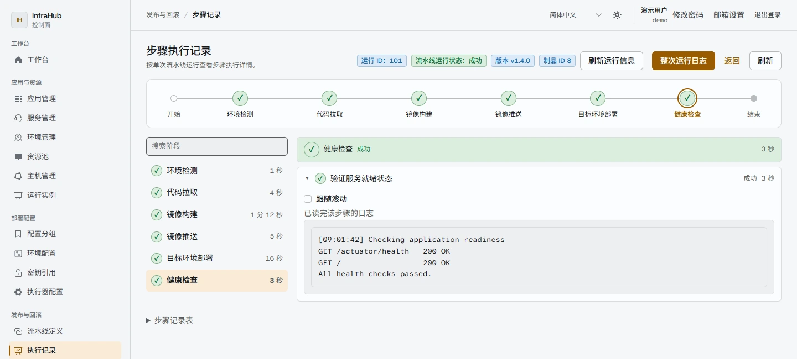

按阶段执行流水线
把拉取代码、构建镜像、部署和健康检查编排进同一次运行，实时查看整次运行或单个步骤的日志。

把拉取代码、构建镜像、部署和健康检查编排进同一次运行，实时查看整次运行或单个步骤的日志。
查看发布生成的版本与制品。需要恢复时，在应用的部署记录中选择目标环境、服务和历史版本。
集中管理应用、环境和主机，查看实例状态与日志，按角色分配页面、操作和应用范围的权限。
准备 Git 和 Docker Compose v2。下面的步骤从仓库源码构建镜像。
git clone https://github.com/ty-ux/InfraHub.git
cd InfraHub
cp deploy/.env.example .envWindows PowerShell 可用 Copy-Item deploy/.env.example .env 复制模板。
在 .env 中设置 POSTGRES_PASSWORD、至少 32 字节的随机 JWT_SECRET，以及至少 15 个字符的 INFRAHUB_AUTH_BOOTSTRAP_ADMIN_PASSWORD。
docker compose up -d --build启动后在部署机器上打开 http://localhost:8088，使用 admin 和设置的初始密码登录，按提示修改密码。